Hands-on Introduction to R 2023
- Introduction: what is data analysis and R basics
- Data visualization and reporting
- Data transformation 1: extract, summarize
- Data transformation 2: join, pivot
- Data cleansing and conversion: numbers, text
- Data input and interpretation
- Statistical modeling 1: probability distribution, likelihood
- Statistical modeling 2: linear regression
https://heavywatal.github.io/slides/english2023r/
Outline of data analysis
- Setup computer environment ✅
- Get and read input data ⬜ day 6 👈
- Exploratory data analysis
- Preparation (harder than it seems) ✅ day 3–5
- Visualization, generating hypotheses (fun!) ✅ day 2
- Statistical analysis, testing hypotheses ⬜ day 7–8
- Report ✅ day 2

Read/write data.frame

-
readxlpackage helps reading.xlsx, but… -
Prefer CSV (Comma-separated values) and TSV (Tab-).
-
Use
readrpackage instead of base R functions. -
Specify a file with the relative path from working directory.
readr::write_tsv(iris, "data/iris.tsv") iris2 = readr::read_tsv("data/iris.tsv")
Oops, an error occurred:
Error: Cannot open file for writing:
* 'data/iris.tsv'
Common errors when reading/writing files
- Wrong file names
- Wrong directory
- Have not created the output directory.
Check your current directory and its content:
getwd() # GET Working Directory
fs::dir_ls(".") # List files in "." (here)
fs::dir_ls("data") # List files in "./data"
fs::dir_create("data") # Create directory
🔰 Write some data.frames to data/ directory.
🔰 Read them and create objects with different names.
🔰 Reporting assignment for Tohoku Univ. students
Read → Prepare → Visualize → a piece of cake … hopefully?
Demo: e-Stat national population census CSV
2020年 → 小地域 → 年齢（５歳階級、４区分）別、男女別人口 → 宮城県
Population pyramids as follows can be drawn from this CSV file, but…
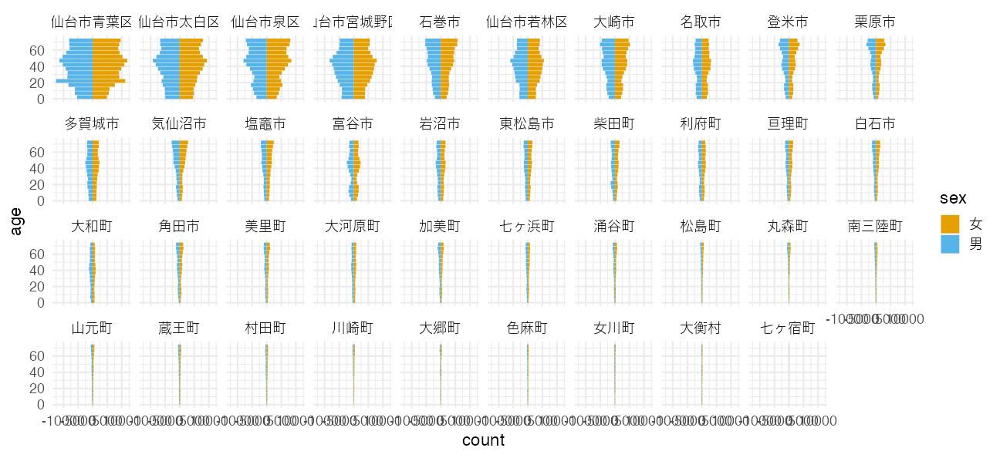Rare to read public data effortlessly
First trial, an error:
infile = "tblT001082C04.txt"
readr::read_csv(infile)
Error in nchar(x, keepNA = FALSE): invalid multibyte string, element 2
View this file with RStudio as a plain text. Decoding fails:
KEY_CODE,HYOSYO,CITYNAME,NAME,HTKSYORI,HTKSAKI,GASSAN,T001082001,T001082002,T001082003,T001082004,T001082005,T001082006,T001082007,T001082008,T001082009,T001082010,T001082011,T001082012,T001082013,T001082014,T001082015,T001082016,T001082017,T001082018,T001082019,T001082020,T001082021,T001082022,T001082023,T001082024,T001082025,T001082026,T001082027,T001082028,T001082029,T001082030,T001082031,T001082032,T001082033,T001082034,T001082035,T001082036,T001082037,T001082038,T001082039,T001082040,T001082041,T001082042,T001082043,T001082044,T001082045,T001082046,T001082047,T001082048,T001082049,T001082050,T001082051,T001082052,T001082053,T001082054,T001082055,T001082056,T001082057,T001082058,T001082059,T001082060
,,,,,,,\x91\x8d\x90\x94\x81A\x94N\x97\xee\x81u\x95s\x8fځv\x8a܂\xde,\x91\x8d\x90\x94\x82O\x81`\x82S\x8d\xce,\x91\x8d\x90\x94\x82T\x81`\x82X\x8d\xce,\x91\x8d\x90\x94\x82P\x82O\x81`\x82P\x82S\x8d\xce,\x91\x8d\x90\x94\x82P\x82T\x81`\x82P\x82X\x8d\xce,\x91\x8d\x90\x94\x82Q\x82O\x81`\x82Q\x82S\x8d\xce,\x91\x8d\x90\x94\x82Q\x82T\x81`\x82Q\x82X\x8d\xce,\x91\x8d\x90\x94\x82R\x82O\x81`\x82R\x82S\x8d\xce,\x91\x8d\x90\x94\x82R\x82T\x81`\x82R\x82X\x8d\xce,\x91\x8d\x90\x94\x82S\x82O\x81`\x82S\x82S\x8d\xce,\x91\x8d\x90\x94\x82S\x82T\x81`\x82S\x82X\x8d\xce,\x91\x8d\x90\x94\x82T\x82O\x81`\x82T\x82S\x8d\xce,\x91\x8d\x90\x94\x82T\x82T\x81`\x82T\x82X\x8d\xce,\x91\x8d\x90\x94\x82U\x82O\x81`\x82U\x82S\x8d\xce,\x91\x8d\x90\x94\x82U\x82T\x81`\x82U\x82X\x8d\xce,\x91\x8d\x90\x94\x82V\x82O\x81`\x82V\x82S\x8d\xce,\x91\x8d\x90\x94\x82P\x82T\x8dΖ\xa2\x96\x9e,\x91\x8d\x90\x94\x82P\x82T\x81`\x82U\x82S\x8d\xce,\x91\x8d\x90\x94\x82U\x82T\x8dΈȏ\xe3,\x91\x8d\x90\x94\x82V\x82T\x8dΈȏ\xe3,\x92j\x82̑\x8d\x90\x94\x81A\x94N\x97\xee\x81u\x95s\x8fځv\x8a܂\xde,\x92j\x82O\x81`\x82S\x8d\xce,\x92j\x82T\x81`\x82X\x8d\xce,\x92j\x82P\x82O\x81`\x82P\x82S\x8d\xce,\x92j\x82P\x82T\x81`\x82P\x82X\x8d\xce,\x92j\x82Q\x82O\x81`\x82Q\x82S\x8d\xce,\x92j\x82Q\x82T\x81`\x82Q\x82X\x8d\xce,\x92j\x82R\x82O\x81`\x82R\x82S\x8d\xce,\x92j\x82R\x82T\x81`\x82R\x82X\x8d\xce,\x92j\x82S\x82O\x81`\x82S\x82S\x8d\xce,\x92j\x82S\x82T\x81`\x82S\x82X\x8d\xce,\x92j\x82T\x82O\x81`\x82T\x82S\x8d\xce,\x92j\x82T\x82T\x81`\x82T\x82X\x8d\xce,\x92j\x82U\x82O\x81`\x82U\x82S\x8d\xce,\x92j\x82U\x82T\x81`\x82U\x82X\x8d\xce,\x92j\x82V\x82O\x81`\x82V\x82S\x8d\xce,\x92j\x82P\x82T\x8dΖ\xa2\x96\x9e,\x92j\x82P\x82T\x81`\x82U\x82S\x8d\xce,\x92j\x82U\x82T\x8dΈȏ\xe3,\x92j\x82V\x82T\x8dΈȏ\xe3,\x8f\x97\x82̑\x8d\x90\x94\x81A\x94N\x97\xee\x81u\x95s\x8fځv\x8a܂\xde,\x8f\x97\x82O\x81`\x82S\x8d\xce,\x8f\x97\x82T\x81`\x82X\x8d\xce,\x8f\x97\x82P\x82O\x81`\x82P\x82S\x8d\xce,\x8f\x97\x82P\x82T\x81`\x82P\x82X\x8d\xce,\x8f\x97\x82Q\x82O\x81`\x82Q\x82S\x8d\xce,\x8f\x97\x82Q\x82T\x81`\x82Q\x82X\x8d\xce,\x8f\x97\x82R\x82O\x81`\x82R\x82S\x8d\xce,\x8f\x97\x82R\x82T\x81`\x82R\x82X\x8d\xce,\x8f\x97\x82S\x82O\x81`\x82S\x82S\x8d\xce,\x8f\x97\x82S\x82T\x81`\x82S\x82X\x8d\xce,\x8f\x97\x82T\x82O\x81`\x82T\x82S\x8d\xce,\x8f\x97\x82T\x82T\x81`\x82T\x82X\x8d\xce,\x8f\x97\x82U\x82O\x81`\x82U\x82S\x8d\xce,\x8f\x97\x82U\x82T\x81`\x82U\x82X\x8d\xce,\x8f\x97\x82V\x82O\x81`\x82V\x82S\x8d\xce,\x8f\x97\x82P\x82T\x8dΖ\xa2\x96\x9e,\x8f\x97\x82P\x82T\x81`\x82U\x82S\x8d\xce,\x8f\x97\x82U\x82T\x8dΈȏ\xe3,\x8f\x97\x82V\x82T\x8dΈȏ\xe3
04101,1,\x90\xe5\x91\xe4\x8es\x90\u0097t\x8b\xe6,,0,,,311590,10231,11633,11838,15944,23772,17838,17677,19028,21113,23299,20544,18295,16702,17137,17700,33702,194212,69969,35132,150932,5350,6087,6066,8321,12579,8669,8600,9241,10232,11412,10317,9031,7893,8010,8082,17503,96295,29477,13385,160658,4881,5546,5772,7623,11193,9169,9077,9787,10881,11887,10227,9264,8809,9127,9618,16199,97917,40492,21747
041010010,2,\x90\xe5\x91\xe4\x8es\x90\u0097t\x8b\xe6,\x90\u0097t\x92\xac,0,,,649,16,15,17,23,53,62,49,40,40,40,45,33,28,38,38,48,413,143,67,307,8,10,7,10,26,30,27,21,18,14,25,16,11,15,16,25,198,60,29,342,8,5,10,13,27,32,22,19,22,26,20,17,17,23,22,23,215,83,38
041010020,2,\x90\xe5\x91\xe4\x8es\x90\u0097t\x8b\xe6,\x82\xa0\x82\xaf\x82ڂ̒\xac,0,,,741,23,18,13,26,32,55,48,42,60,51,48,47,38,55,43,54,447,209,111,365,12,10,4,15,16,22,28,19,39,27,25,16,23,24,21,26,230,89,44,376,11,8,9,11,16,33,20,23,21,24,23,31,15,31,22,28,217,120,67
Select “File → Reopen with Encoding…”.
Modern, decent text files should be encoded in UTF-8.
Old Japanese text tend to be encoded in SHIFT-JIS (or EUC-JP).
Open a file with a different encoding
Next problem: the second row also has column names:
sjis = readr::locale(encoding = "SHIFT-JIS")
readr::read_csv(infile, locale = sjis)
KEY_CODE HYOSYO CITYNAME NAME HTKSYORI HTKSAKI GASSAN T001082001 T001082002 T001082003 T001082004 T001082005 T001082006 T001082007 T001082008 T001082009 T001082010 T001082011 T001082012 T001082013 T001082014 T001082015 T001082016 T001082017 T001082018 T001082019 T001082020 T001082021 T001082022 T001082023 T001082024 T001082025 T001082026 T001082027 T001082028 T001082029 T001082030 T001082031 T001082032 T001082033 T001082034 T001082035 T001082036 T001082037 T001082038 T001082039 T001082040 T001082041 T001082042 T001082043 T001082044 T001082045 T001082046 T001082047 T001082048 T001082049 T001082050 T001082051 T001082052 T001082053 T001082054 T001082055 T001082056 T001082057 T001082058 T001082059 T001082060
1 <NA> NA <NA> <NA> NA <NA> <NA> 総数、年齢「不詳」含む 総数０〜４歳 総数５〜９歳 総数１０〜１４歳 総数１５〜１９歳 総数２０〜２４歳 総数２５〜２９歳 総数３０〜３４歳 総数３５〜３９歳 総数４０〜４４歳 総数４５〜４９歳 総数５０〜５４歳 総数５５〜５９歳 総数６０〜６４歳 総数６５〜６９歳 総数７０〜７４歳 総数１５歳未満 総数１５〜６４歳 総数６５歳以上 総数７５歳以上 男の総数、年齢「不詳」含む 男０〜４歳 男５〜９歳 男１０〜１４歳 男１５〜１９歳 男２０〜２４歳 男２５〜２９歳 男３０〜３４歳 男３５〜３９歳 男４０〜４４歳 男４５〜４９歳 男５０〜５４歳 男５５〜５９歳 男６０〜６４歳 男６５〜６９歳 男７０〜７４歳 男１５歳未満 男１５〜６４歳 男６５歳以上 男７５歳以上 女の総数、年齢「不詳」含む 女０〜４歳 女５〜９歳 女１０〜１４歳 女１５〜１９歳 女２０〜２４歳 女２５〜２９歳 女３０〜３４歳 女３５〜３９歳 女４０〜４４歳 女４５〜４９歳 女５０〜５４歳 女５５〜５９歳 女６０〜６４歳 女６５〜６９歳 女７０〜７４歳 女１５歳未満 女１５〜６４歳 女６５歳以上 女７５歳以上
2 04101 1 仙台市青葉区 <NA> 0 <NA> <NA> 311590 10231 11633 11838 15944 23772 17838 17677 19028 21113 23299 20544 18295 16702 17137 17700 33702 194212 69969 35132 150932 5350 6087 6066 8321 12579 8669 8600 9241 10232 11412 10317 9031 7893 8010 8082 17503 96295 29477 13385 160658 4881 5546 5772 7623 11193 9169 9077 9787 10881 11887 10227 9264 8809 9127 9618 16199 97917 40492 21747
3 041010010 2 仙台市青葉区 青葉町 0 <NA> <NA> 649 16 15 17 23 53 62 49 40 40 40 45 33 28 38 38 48 413 143 67 307 8 10 7 10 26 30 27 21 18 14 25 16 11 15 16 25 198 60 29 342 8 5 10 13 27 32 22 19 22 26 20 17 17 23 22 23 215 83 38
4 041010020 2 仙台市青葉区 あけぼの町 0 <NA> <NA> 741 23 18 13 26 32 55 48 42 60 51 48 47 38 55 43 54 447 209 111 365 12 10 4 15 16 22 28 19 39 27 25 16 23 24 21 26 230 89 44 376 11 8 9 11 16 33 20 23 21 24 23 31 15 31 22 28 217 120 67
--
5941 04606004015 4 南三陸町 歌津字石浜 0 <NA> <NA> 295 9 7 11 6 6 12 6 18 16 19 21 36 18 30 26 27 158 110 54 146 5 5 5 3 5 8 2 6 8 10 14 16 8 11 20 15 80 51 20 149 4 2 6 3 1 4 4 12 8 9 7 20 10 19 6 12 78 59 34
5942 04606004016 4 南三陸町 歌津字田の浦 0 <NA> <NA> 144 5 2 5 3 5 7 5 7 6 5 15 12 17 14 4 12 82 50 32 66 - 1 3 1 3 4 3 4 3 2 6 5 9 9 4 4 40 22 9 78 5 1 2 2 2 3 2 3 3 3 9 7 8 5 - 8 42 28 23
5943 04606004017 4 南三陸町 歌津字草木沢 0 <NA> <NA> 457 21 16 18 16 12 13 20 18 18 41 34 28 37 46 43 55 237 165 76 234 11 6 8 10 11 5 9 10 11 22 18 15 17 19 29 25 128 81 33 223 10 10 10 6 1 8 11 8 7 19 16 13 20 27 14 30 109 84 43
5944 04606004018 4 南三陸町 歌津字伊里前 0 <NA> <NA> - - - - - - - - - - - - - - - - - - - - - - - - - - - - - - - - - - - - - - - - - - - - - - - - - - - - - - - - - - - -
Bind the left and right halves after cleaning each
Numeric columns have non-numeric characters like - and X:
dfL = readr::read_csv(infile, locale = sjis, col_select = seq(1, 7)) |>
dplyr::slice(-1)
dfR = readr::read_csv(infile, locale = sjis, col_select = -seq(1, 7),
skip = 1L)
raw_miyagi = dplyr::bind_cols(dfL, dfR) |> print()
KEY_CODE HYOSYO CITYNAME NAME HTKSYORI HTKSAKI GASSAN 総数、年齢「不詳」含む 総数０〜４歳 総数５〜９歳 総数１０〜１４歳 総数１５〜１９歳 総数２０〜２４歳 総数２５〜２９歳 総数３０〜３４歳 総数３５〜３９歳 総数４０〜４４歳 総数４５〜４９歳 総数５０〜５４歳 総数５５〜５９歳 総数６０〜６４歳 総数６５〜６９歳 総数７０〜７４歳 総数１５歳未満 総数１５〜６４歳 総数６５歳以上 総数７５歳以上 男の総数、年齢「不詳」含む 男０〜４歳 男５〜９歳 男１０〜１４歳 男１５〜１９歳 男２０〜２４歳 男２５〜２９歳 男３０〜３４歳 男３５〜３９歳 男４０〜４４歳 男４５〜４９歳 男５０〜５４歳 男５５〜５９歳 男６０〜６４歳 男６５〜６９歳 男７０〜７４歳 男１５歳未満 男１５〜６４歳 男６５歳以上 男７５歳以上 女の総数、年齢「不詳」含む 女０〜４歳 女５〜９歳 女１０〜１４歳 女１５〜１９歳 女２０〜２４歳 女２５〜２９歳 女３０〜３４歳 女３５〜３９歳 女４０〜４４歳 女４５〜４９歳 女５０〜５４歳 女５５〜５９歳 女６０〜６４歳 女６５〜６９歳 女７０〜７４歳 女１５歳未満 女１５〜６４歳 女６５歳以上 女７５歳以上
1 04101 1 仙台市青葉区 <NA> 0 <NA> <NA> 311590 10231 11633 11838 15944 23772 17838 17677 19028 21113 23299 20544 18295 16702 17137 17700 33702 194212 69969 35132 150932 5350 6087 6066 8321 12579 8669 8600 9241 10232 11412 10317 9031 7893 8010 8082 17503 96295 29477 13385 160658 4881 5546 5772 7623 11193 9169 9077 9787 10881 11887 10227 9264 8809 9127 9618 16199 97917 40492 21747
2 041010010 2 仙台市青葉区 青葉町 0 <NA> <NA> 649 16 15 17 23 53 62 49 40 40 40 45 33 28 38 38 48 413 143 67 307 8 10 7 10 26 30 27 21 18 14 25 16 11 15 16 25 198 60 29 342 8 5 10 13 27 32 22 19 22 26 20 17 17 23 22 23 215 83 38
3 041010020 2 仙台市青葉区 あけぼの町 0 <NA> <NA> 741 23 18 13 26 32 55 48 42 60 51 48 47 38 55 43 54 447 209 111 365 12 10 4 15 16 22 28 19 39 27 25 16 23 24 21 26 230 89 44 376 11 8 9 11 16 33 20 23 21 24 23 31 15 31 22 28 217 120 67
4 041010030 3 仙台市青葉区 旭ケ丘 0 <NA> <NA> 9160 279 289 272 315 766 880 771 643 633 713 561 493 436 363 358 840 6211 1671 950 4274 149 161 141 155 315 366 352 308 296 350 278 237 220 165 167 451 2877 697 365 4886 130 128 131 160 451 514 419 335 337 363 283 256 216 198 191 389 3334 974 585
--
5940 04606004015 4 南三陸町 歌津字石浜 0 <NA> <NA> 295 9 7 11 6 6 12 6 18 16 19 21 36 18 30 26 27 158 110 54 146 5 5 5 3 5 8 2 6 8 10 14 16 8 11 20 15 80 51 20 149 4 2 6 3 1 4 4 12 8 9 7 20 10 19 6 12 78 59 34
5941 04606004016 4 南三陸町 歌津字田の浦 0 <NA> <NA> 144 5 2 5 3 5 7 5 7 6 5 15 12 17 14 4 12 82 50 32 66 - 1 3 1 3 4 3 4 3 2 6 5 9 9 4 4 40 22 9 78 5 1 2 2 2 3 2 3 3 3 9 7 8 5 - 8 42 28 23
5942 04606004017 4 南三陸町 歌津字草木沢 0 <NA> <NA> 457 21 16 18 16 12 13 20 18 18 41 34 28 37 46 43 55 237 165 76 234 11 6 8 10 11 5 9 10 11 22 18 15 17 19 29 25 128 81 33 223 10 10 10 6 1 8 11 8 7 19 16 13 20 27 14 30 109 84 43
5943 04606004018 4 南三陸町 歌津字伊里前 0 <NA> <NA> - - - - - - - - - - - - - - - - - - - - - - - - - - - - - - - - - - - - - - - - - - - - - - - - - - - - - - - - - - - -
Read non-empty “missing” values as NA
OK, now we got to the starting point…
dfL = readr::read_csv(infile, locale = sjis, col_select = seq(1, 7)) |>
dplyr::slice(-1)
dfR = readr::read_csv(infile, locale = sjis, col_select = -seq(1, 7),
skip = 1L, na = c("-", "X"))
raw_miyagi = dplyr::bind_cols(dfL, dfR) |> print()
KEY_CODE HYOSYO CITYNAME NAME HTKSYORI HTKSAKI GASSAN 総数、年齢「不詳」含む 総数０〜４歳 総数５〜９歳 総数１０〜１４歳 総数１５〜１９歳 総数２０〜２４歳 総数２５〜２９歳 総数３０〜３４歳 総数３５〜３９歳 総数４０〜４４歳 総数４５〜４９歳 総数５０〜５４歳 総数５５〜５９歳 総数６０〜６４歳 総数６５〜６９歳 総数７０〜７４歳 総数１５歳未満 総数１５〜６４歳 総数６５歳以上 総数７５歳以上 男の総数、年齢「不詳」含む 男０〜４歳 男５〜９歳 男１０〜１４歳 男１５〜１９歳 男２０〜２４歳 男２５〜２９歳 男３０〜３４歳 男３５〜３９歳 男４０〜４４歳 男４５〜４９歳 男５０〜５４歳 男５５〜５９歳 男６０〜６４歳 男６５〜６９歳 男７０〜７４歳 男１５歳未満 男１５〜６４歳 男６５歳以上 男７５歳以上 女の総数、年齢「不詳」含む 女０〜４歳 女５〜９歳 女１０〜１４歳 女１５〜１９歳 女２０〜２４歳 女２５〜２９歳 女３０〜３４歳 女３５〜３９歳 女４０〜４４歳 女４５〜４９歳 女５０〜５４歳 女５５〜５９歳 女６０〜６４歳 女６５〜６９歳 女７０〜７４歳 女１５歳未満 女１５〜６４歳 女６５歳以上 女７５歳以上
1 04101 1 仙台市青葉区 <NA> 0 <NA> <NA> 311590 10231 11633 11838 15944 23772 17838 17677 19028 21113 23299 20544 18295 16702 17137 17700 33702 194212 69969 35132 150932 5350 6087 6066 8321 12579 8669 8600 9241 10232 11412 10317 9031 7893 8010 8082 17503 96295 29477 13385 160658 4881 5546 5772 7623 11193 9169 9077 9787 10881 11887 10227 9264 8809 9127 9618 16199 97917 40492 21747
2 041010010 2 仙台市青葉区 青葉町 0 <NA> <NA> 649 16 15 17 23 53 62 49 40 40 40 45 33 28 38 38 48 413 143 67 307 8 10 7 10 26 30 27 21 18 14 25 16 11 15 16 25 198 60 29 342 8 5 10 13 27 32 22 19 22 26 20 17 17 23 22 23 215 83 38
3 041010020 2 仙台市青葉区 あけぼの町 0 <NA> <NA> 741 23 18 13 26 32 55 48 42 60 51 48 47 38 55 43 54 447 209 111 365 12 10 4 15 16 22 28 19 39 27 25 16 23 24 21 26 230 89 44 376 11 8 9 11 16 33 20 23 21 24 23 31 15 31 22 28 217 120 67
4 041010030 3 仙台市青葉区 旭ケ丘 0 <NA> <NA> 9160 279 289 272 315 766 880 771 643 633 713 561 493 436 363 358 840 6211 1671 950 4274 149 161 141 155 315 366 352 308 296 350 278 237 220 165 167 451 2877 697 365 4886 130 128 131 160 451 514 419 335 337 363 283 256 216 198 191 389 3334 974 585
--
5940 04606004015 4 南三陸町 歌津字石浜 0 <NA> <NA> 295 9 7 11 6 6 12 6 18 16 19 21 36 18 30 26 27 158 110 54 146 5 5 5 3 5 8 2 6 8 10 14 16 8 11 20 15 80 51 20 149 4 2 6 3 1 4 4 12 8 9 7 20 10 19 6 12 78 59 34
5941 04606004016 4 南三陸町 歌津字田の浦 0 <NA> <NA> 144 5 2 5 3 5 7 5 7 6 5 15 12 17 14 4 12 82 50 32 66 NA 1 3 1 3 4 3 4 3 2 6 5 9 9 4 4 40 22 9 78 5 1 2 2 2 3 2 3 3 3 9 7 8 5 NA 8 42 28 23
5942 04606004017 4 南三陸町 歌津字草木沢 0 <NA> <NA> 457 21 16 18 16 12 13 20 18 18 41 34 28 37 46 43 55 237 165 76 234 11 6 8 10 11 5 9 10 11 22 18 15 17 19 29 25 128 81 33 223 10 10 10 6 1 8 11 8 7 19 16 13 20 27 14 30 109 84 43
5943 04606004018 4 南三陸町 歌津字伊里前 0 <NA> <NA> NA NA NA NA NA NA NA NA NA NA NA NA NA NA NA NA NA NA NA NA NA NA NA NA NA NA NA NA NA NA NA NA NA NA NA NA NA NA NA NA NA NA NA NA NA NA NA NA NA NA NA NA NA NA NA NA NA NA NA NA
Then, tidy it with dplyr and tidyr
Still many traps: leading/trailing whitespace, full-width numbers, etc.
tidy_miyagi = raw_miyagi |>
dplyr::rename_with(stringr::str_trim) |>
dplyr::filter(HYOSYO == 1) |>
dplyr::select(CITYNAME, matches("[男女].+歳")) |>
tidyr::pivot_longer(!CITYNAME, names_to = "category", values_to = "count") |>
tidyr::separate(category, c("sex", "age"), 1) |>
dplyr::mutate(age = stringi::stri_trans_nfkc(age)) |>
tidyr::separate(age, c("lower", "upper"), "〜", fill = "right") |>
dplyr::mutate(lower = readr::parse_number(lower),
upper = readr::parse_number(upper)) |>
dplyr::filter((upper - lower) < 5 | lower == 75) |>
dplyr::mutate(age = (lower + upper) / 2) |>
print()
CITYNAME sex lower upper count age
1 仙台市青葉区 男 0 4 5350 2
2 仙台市青葉区 男 5 9 6087 7
3 仙台市青葉区 男 10 14 6066 12
4 仙台市青葉区 男 15 19 8321 17
--
1245 南三陸町 女 60 64 507 62
1246 南三陸町 女 65 69 553 67
1247 南三陸町 女 70 74 450 72
1248 南三陸町 女 75 NA 1602 NA
Plotting is easy once tidy data is ready
tidy_miyagi |>
dplyr::mutate(count = ifelse(sex == "男", -1, 1) * count) |>
ggplot() +
geom_col(aes(age, count, fill = sex)) +
facet_wrap(vars(CITYNAME), nrow = 4L) +
coord_flip() + theme_minimal(base_size = 15)
Datasets in the wild require prep for prep
Now we have great skills for data preparation with R ✨
Not scared of messy data!
that being said,
- Data files must be readable at least.
- The more irregularity, the more workload.
What should we care about when we are the primary data source?
Ministry of Internal affairs and Communication published a document in 2020.
「統計表における機械判読可能なデータの表記方法の統一ルール」
Rule 1. One value in one cell

Useful functions to handle bad forms:
tidyr::separate(), stringr::str_split(), stringr::str_extract()
Rule 1. One value in one cell

Useful functions to handle bad forms:
tidyr::separate(), stringr::str_split(), stringr::str_extract()
Rule 2. Leave numbers purely numeric
No unit, no comma, no space should be included in a cell.

Useful functions to handle bad forms:
readr::parse_number(), stringr::str_remove(), stringr::str_replace()
Rule 2. Leave numbers purely numeric
No unit, no comma, no space should be included in a cell.

Useful functions to handle bad forms:
readr::parse_number(), stringr::str_remove(), stringr::str_replace()
Rule 2. Leave numbers purely numeric
No footnote should be included in a table.

Useful functions to handle bad forms:
readr::parse_number(), stringr::str_remove(), stringr::str_replace()
Rule 3. Don’t align/justify text with space characters
"A", " A", and " A" are different for machines.

Useful functions to handle bad forms:
stringr::str_trim(), stringr::str_remove(), stringr::str_replace()
Rule 3. Don’t align/justify text with space characters

Useful functions to handle bad forms:
stringr::str_trim(), stringr::str_remove(), stringr::str_replace()
Rule 4. Never merge cells, ever

Useful functions to handle bad forms:
tidyr::fill()
Rule 4. Never merge cells, ever

Useful functions to handle bad forms:
tidyr::fill()
Rule 5. Don’t omit repeated words
They are not recognized automatically.

Useful functions to handle bad forms:
tidyr::fill(), tidyr::separate(), stringr::str_replace()
Rule 6. Avoid platform-dependent characters
Stick to only ASCII characters whenever possible.

Useful functions to handle bad forms:
stringi::stri_trans_nfkc()
Rule 7. One table in one sheet
For that matter, one sheet in one file.

Rule 8. Miscellaneous
- First row is column names (or first record).
- No meaning less blank lines.
- No nameless columns.
- Columns names should be valid object names in a program.
- contains only normal word characters
\w+. - not starts with numbers.
- contains only normal word characters
- Save as plain text, not Excel (
.xlsx).- Tab-separated values (
.tsv) or Comma- (.csv) - Files and directories should be named systematically too.
- Tab-separated values (
Data input rules
- One value in one cell.
- Leave numbers purely numeric.
- Don’t align/justify text with space characters.
- Never merge cells, ever.
- Don’t omit repeated words.
- Avoid platform-dependent characters.
- One table in one sheet.
- First row is column names.
In other words, think about the future you analyze it.
Be aware of Excel’s kindness/betrayal
Widely used as a software to view and edit table format data.
It has many nice features, but often brings chaos.
- Some strings are converted to dates:
22-4,4-14 - Some gene names are converted to date:
MARCH1,SEPT1
(Scientists renamed them because of this.)
🔰 Experience the fear:
gene,label
MARCH1,22-4
SEPT1,4-14
- Copy-and-paste the text above to a plaintext named
excel.csv. - Open it with Excel, and check the content.
- Save it as another CSV,
excel2.csv. - Open it as plaintext, and check the content.
Today’s lesson
✅ Data input
- Difficulty in reading data in the wild
- What you should care about when you are the data source.
⬜ Data interpretation (very basic introduction)
- Errors (bias and dispersion)
- Statistical hypothesis testing
- Correlation and causation
Garbage in, garbage out
no matter how fantastic your statistical analysis is.

What impairs data input?
Observation/sampling involves distortion inevitably
- Whole population and phenomena themselves cannot be observed.
- Only their subsets are sampled.
- Only measurable aspects are measured.

Two types of errors
- Systematic errors / bias
- consistent differences between the observed and true values.
- Random errors
- inconsistent and unpredictable differences between observations.
e.g., Weigh yourself 10 times with your clothes on.

Selection bias

- Survivorship bias
- A kind of logical error based on incomplete data.
- e.g., Damage distribution of surviving aircraft ✈️✈️
being shot → survived → observed
being shot → crashed → not observed
Add armor to the {least or most} damaged areas? - Sampling bias
- Targets are already biased, not representing the population.
- 📞 Phone survey by newspaper → afford phones, has spare time, answers an anonymous caller, subscribing the newspaper.
🔰 Selection bias in biological research?
Biased data collection + interpretation
- Cherry picking 🍒
- to collect information that confirm/support a hypothesis
while ignoring the others that contradict it. - Confirmation bias
- innate and unconscious tendency to cherry-pick.
Each card has a number on one side and an alphabet on the other.
“If a card has an even number, then it has A on the other side."
To test this statement, which cards should be turned over?
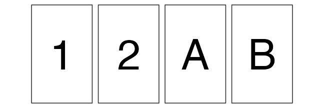
Tendency to perceive patterns in random information
- Post hoc (ergo propter hoc) fallacy
- A occurred, then B occurred; therefore A caused B.
- Gambler’s fallacy
- Tossed N heads in a row; the next is likely to come up tails.
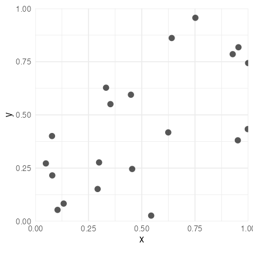
Cognitive bias related to data interpretation
- Availability heuristic
- overrating an immediate example that came to mind
- e.g., words with leading “k” vs words with “k” at third; which exist more?
- Representativeness heuristic
- overrating stereotypes.
- e.g., Linda is a 31 year-old single woman. Honest and smart. Majors in philosophy.
Interested in racial discrimination and justice. Attended anti-nuclear demonstration as a student.
Which is more likely as current Linda?- Linda is a bank teller.
- Linda is a bank teller and being feminist.
There are many other cognitive bias and errors.
Variations by random errors → probability distribution
We will learn it next time.
Various shapes depending on underlying mechanisms.
Central tendency of a distribution
- mean
- sum divided by count
- median
- 50th percentile
- mode
- the most frequent value

- Responses to outliers
- Suppose a trillionaire with 20 trillion yen assets moved into Tottori pref..
→ Mean assets increases by 40M yen while median and mode remain.
Summary statistics to describe variability/dispersion
- Variance
- mean squared deviations from the average: $\frac 1 n \sum _i ^n (X_i - \bar X)^2$
- Its square root is standard deviation.
- Percentile, Quantile
- What percentage of values are smaller than this?
- median = 50th percentile = second quantile (Q2)
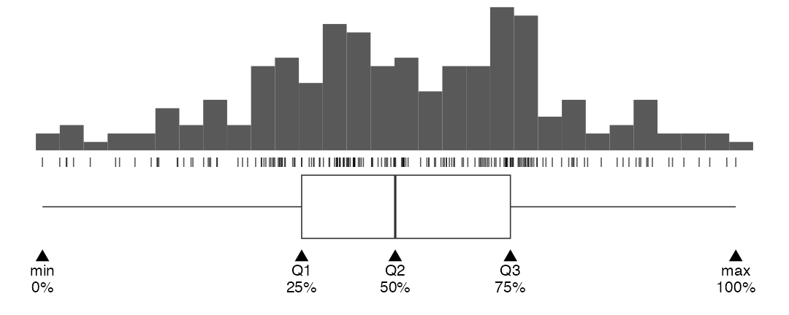
Many ways to visualize 1D data distribution
Impression and information amount vary by graph.
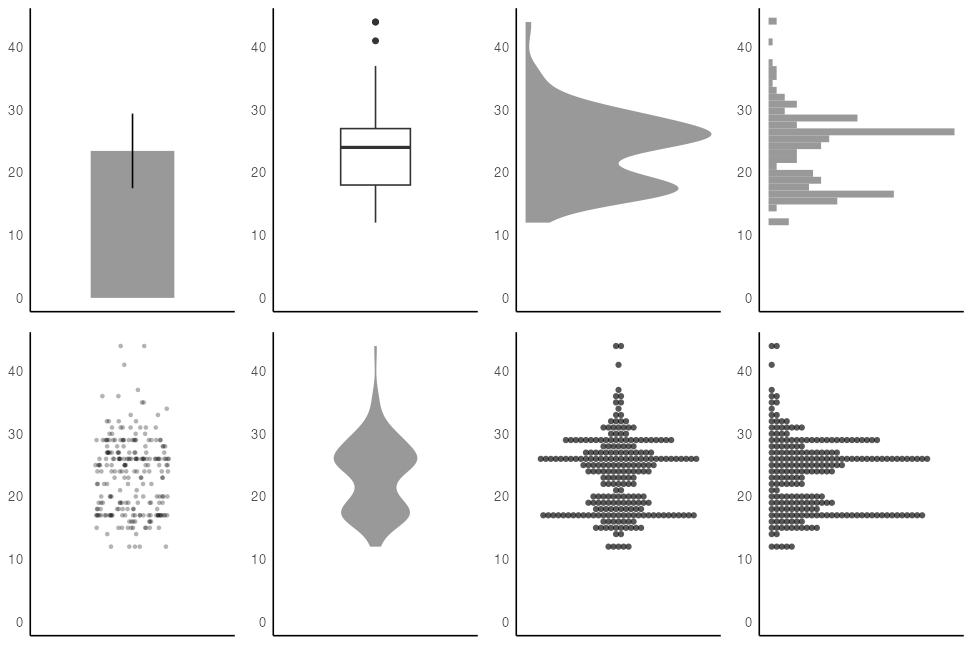
Comparing two variables: is A smaller than B?
considering dispersion as well as central tendency.
Cannot conclude.
A tend to be smaller...?
Sure A is smaller.
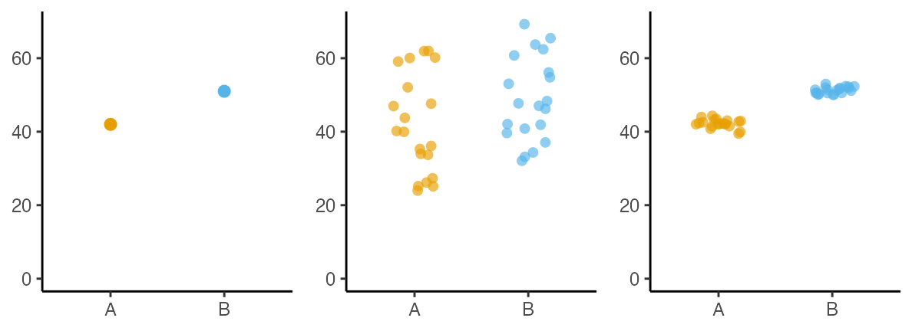
“The probability to observe this difference by chance is very low."
A method to show this is called statistical hypothesis testing.
Statistical hypothesis testing
🎲 Out of 10 rolls of a dice, 6 appeared 9 times. Is this dice unfair?
- Null hypothesis, $H_0$
- The probability that 6 comes up = 1/6. The dice is fair.
- Alternative hypothesis, $H_1$
- The probability that 6 comes up ≠ 1/6. The dice is unfair.
- Calc the probability p to get the observed or more extreme values under $H_0$.
- Reject $H_0$ if $p < \alpha$, significance level, the probability of type 1 error.
($\alpha$ should be set before testing, e.g., to 0.05 or 0.01.) - Otherwise accept $H_1$. The probability to roll a 6 is different from 1/6.
Statistical hypothesis testing
🎲 Out of 12 rolls of a dice, 6 appeared 4 times. Is this dice unfair?
Probability to roll 4 or more sixes out of 12 under $H_0$: $p = 0.125 > \alpha$
Failed to reject $H_0$ this time.
The probability to roll a 6 is not significantly different from 1/6.
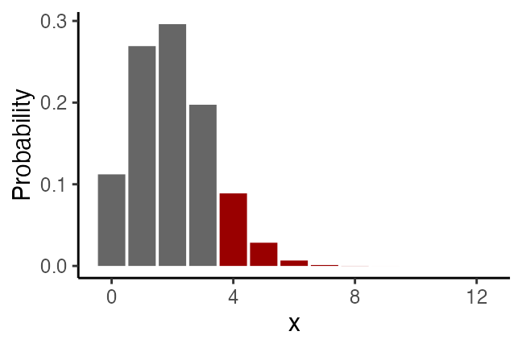
Note: NOT accepting $H_0$. NOT saying the probability is equal to 1/6.
Multiple testing increases the risk of false positive
A test with $\alpha=0.05$ mistakenly rejects true $H_0$ with the probability of ≤5%.
By repeating such test 10 times, the probability to get at least one false positive (family-wise error rate, FWER) is up to
$1 - (1 - 0.05)^{10} \approx 0.40$
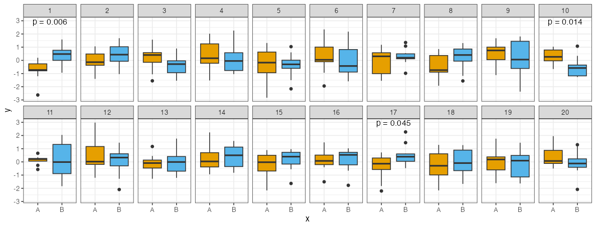
- Multiple testing correction
- making statistical tests more stringent to counteract the problem.
- e.g., Bonferroni, Holm, Benjamini and Hochberg, etc.
Comparing two variables: correlation and causation
- (Linear) Correlation
- degree and direction to which two variables vary together.
- e.g., math scores and physics scores.
- Causation
- one phenomenon affects another.
- e.g., studying 1 hour longer leads to scoring 3 points more.
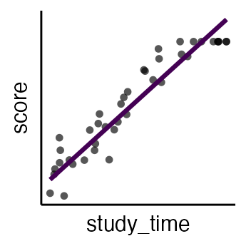
- Causation often leads to correlation.
- Correlation does not imply causation →
Misjudgment 1: confounding factor
誤: Increasing 🍦icecream sales causes increasing 🍺beer sales.
正: Both 🍦icecream and 🍺beer sell better when it is 🌞 hot.
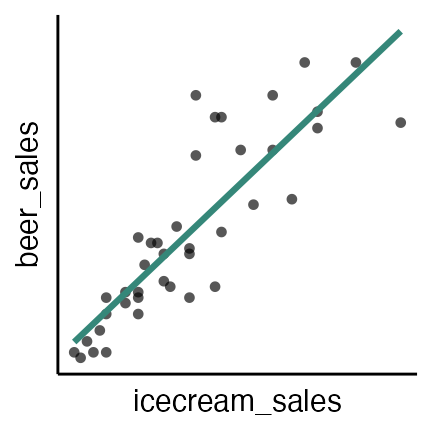

Misjudgment 2: reverse causation
誤: Increasing police officer causes increase in crimes.
正: The more crime leads to more police deployment.
Misjudgment 3: selection bias
Collecting (x + y) pairs that fall within a specific range.
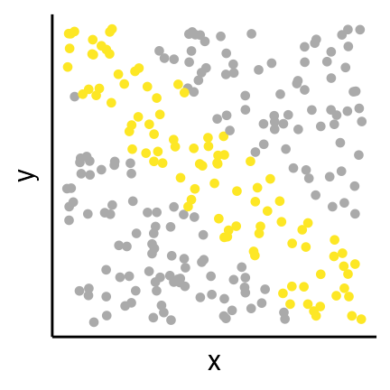
Misjudgment 4: Outliers and group structures
Correlation coefficient can jump by a few outliers and group structures.
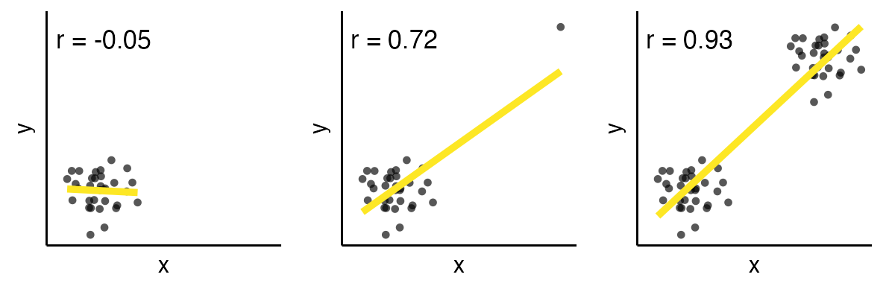
Misjudgment 5: by chance
Number of drowned people and the films in which Nicolas Cage appeared.

Relationship between variables

- Correlation does not imply causation.
- Be aware of reverse causation and spurious correlation.
🔰 Find examples of these four types of relationships.
Reference
- 「Rを用いたデータ解析の基礎と応用」 石川由希 2023 名古屋大学
- データ解析のための統計モデリング入門 久保拓弥 2012
- 分析者のためのデータ解釈学入門 江崎貴裕 2020
- データ分析のための数理モデル入門 江崎貴裕 2020
- 統計学を哲学する 大塚淳 2020
- 統計思考の世界 三中信宏 2018
- Quarto / R Markdown